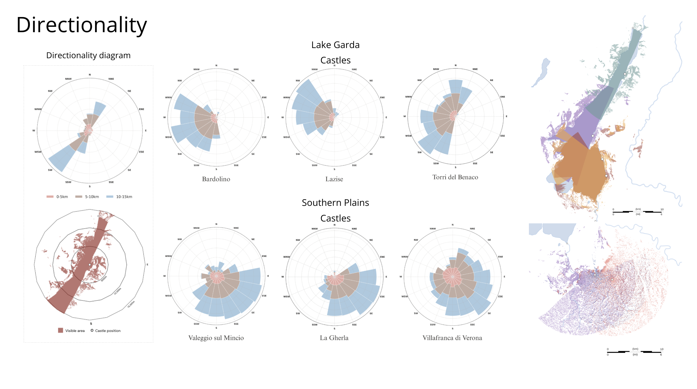
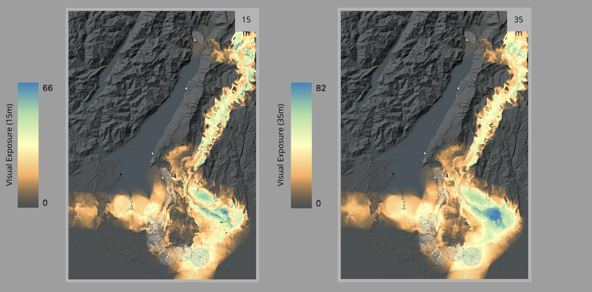
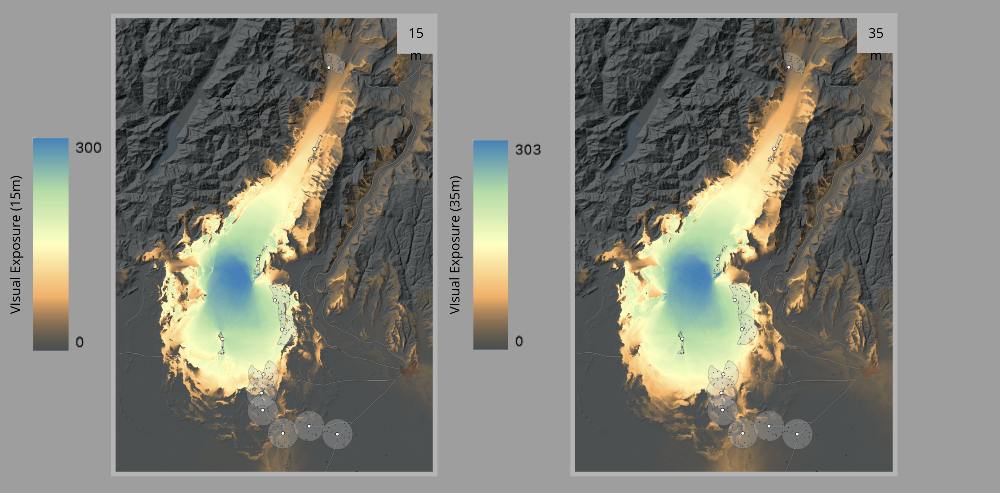
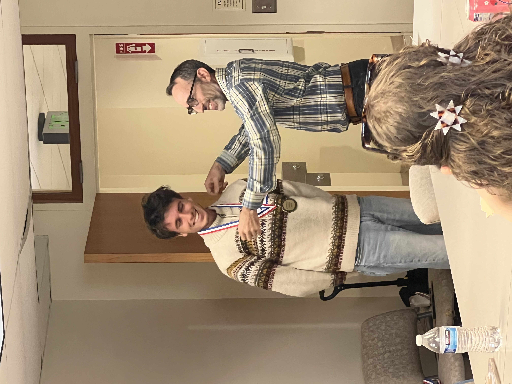

Landscape archaeology · GIS
Scaliger Castle Viewsheds
An award-winning spatial study testing how visibility analysis can sharpen—and complicate—interpretations of medieval fortified landscapes.
Origins and landscape
This independent project grew from my introduction to medieval landscape archaeology under University of Bologna Professor Marco Cavalazzi and was advised at UC Santa Barbara by Professor Stuart Tyson Smith. Preliminary research included visits to castle sites around Lake Garda and conversations with scholars at the University of Verona excavation at Castelvecchio.
The Scaligers, or Della Scala, ruled Verona in the 13th and 14th centuries. Their consolidation and expansion left a landscape dotted with castles. In western Veronese territory, these sites form networks along Lake Garda’s eastern shore, the Mincio corridor, and the walled system known as the Serraglio.

Testing visibility
Earlier scholarship alluded to the castles’ intervisibility and strategic placement. I used digital elevation models, observer manipulation, viewsheds, and cumulative visibility analyses to reconstruct what could hypothetically be seen from the castles—and from where the castles could be seen.



Rethinking the question
Research into castle studies revealed a divided historiography: castles interpreted either as symbolic structures or as functional military ones. I realized that visibility models can reproduce that split with a veneer of objectivity. Intervisibility does not by itself prove communication; visibility from a road does not prove an intent to project power; and a view over a pass does not prove a defensive purpose.
My conclusion was that GIS visibility is an extraordinarily useful method, but one that can reinforce an old debate rather than resolve it unless modeling choices and interpretive assumptions remain explicit.
Recognition and next steps
I presented the research at the 2nd Annual UCSB Anthropology Research Symposium, where it received first place among lightning talks and a subsequent Award for Research Promise. I am now developing the results for publication.
